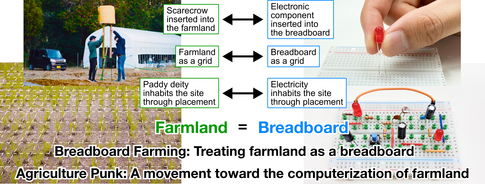
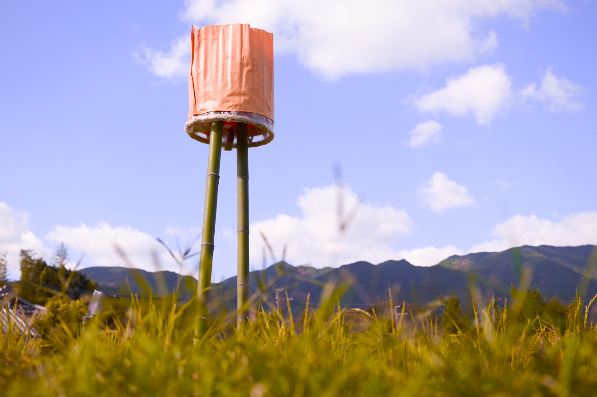
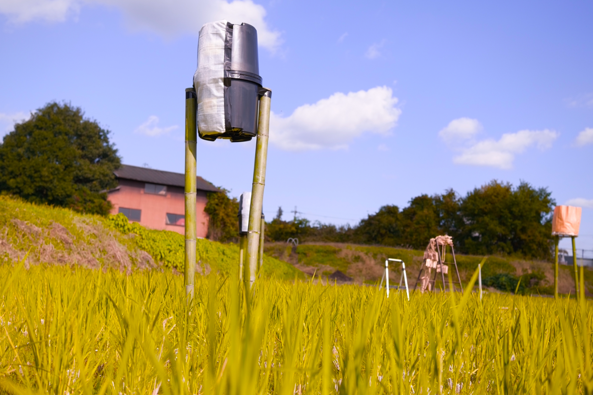
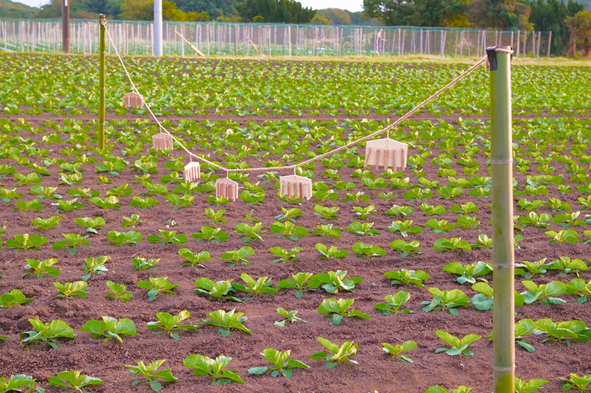
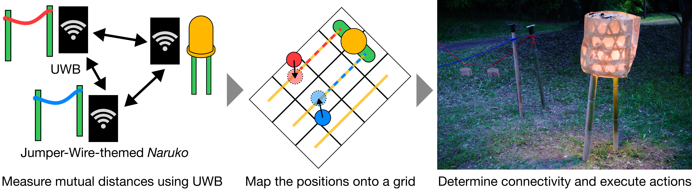
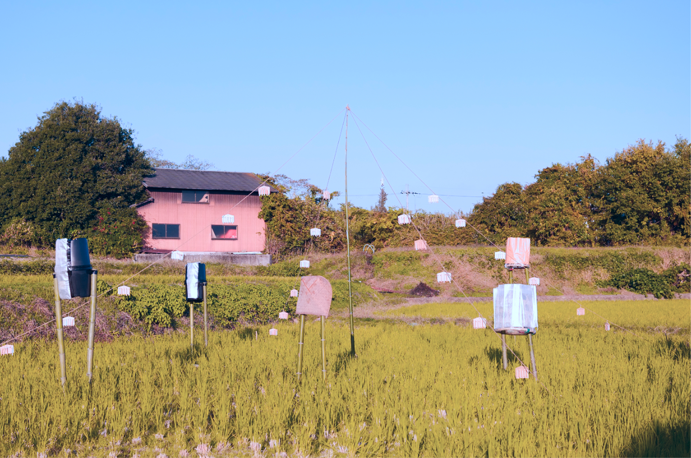
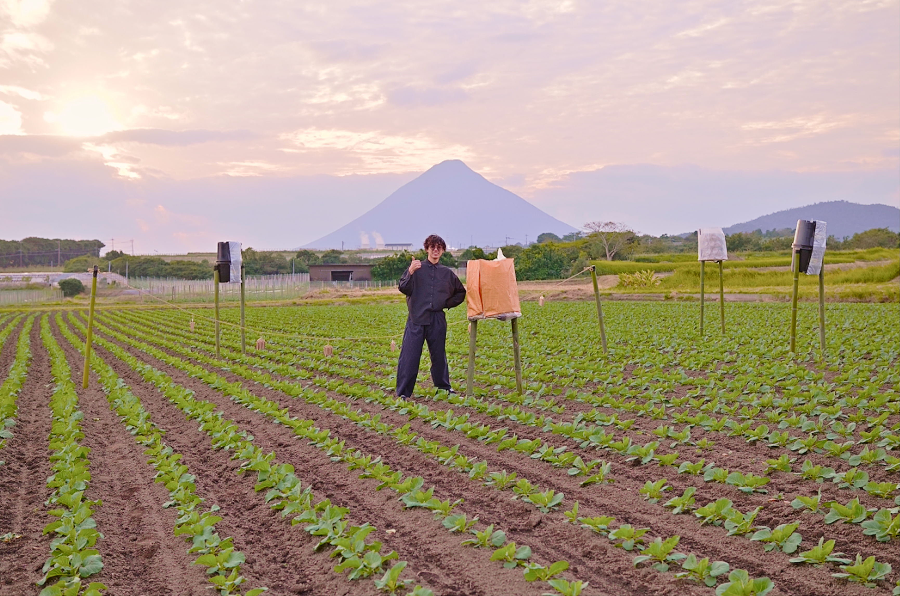
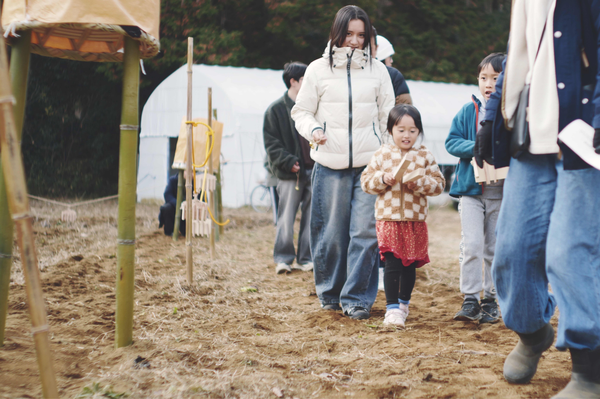

SIGGRAPH 2026 Posters · Los Angeles · July 19–23, 2026
Agriculture Punk:
Hello World from Breadboard Farming
University of Tsukuba, Digital Nature Group

Abstract
Farmland and breadboards share an operational logic: both engage invisible forces through the plugging and unplugging of physical objects. Drawing on this structural isomorphism, we reframe agricultural observation, judgment, belief, and ritual as the operations of connection and disconnection found in electronics prototyping, and propose Agriculture Punk — a movement toward the computerization of farmland. We present Breadboard Farming as its first artistic practice: electronic component-themed tools that reinterpret farming implements and ritual objects as circuit elements, together with a system that realizes breadboard-style connections across physical farmland. Through deployments in a rice field, a cabbage field, and a harvest festival, we demonstrate the first redescription of agricultural ritual and situated knowledge through the vocabulary of electronics prototyping.
Video
Deity and Electricity Are Operationally Equivalent

In Japanese agriculture, scarecrows have long been staked into fields as vessels for the paddy deity believed to dwell in the rice field — welcomed during the growing season and ritually removed after harvest to release the deity back to the mountains. The same operational logic appears in electronics prototyping: components are plugged and unplugged on breadboards to compose circuits. Deity and electricity are operationally equivalent — both invisible, both inhabiting a site through object placement, both governed by plugging and unplugging.
From this analogy we propose Agriculture Punk, a movement toward the computerization of farmland, and present Breadboard Farming as one of its artistic practices: the field is treated as a breadboard, and scarecrows and naruko (rattles that produce sound when a cord is shaken) are redesigned as circuit elements. Rather than augmenting indigenous practice digitally, this work layers a circuit-based interpretation onto it.
Electronic Component-Themed Tools
Scarecrows and naruko are objects long present in Japanese fields, and like circuit components they are operated through placement and removal — staked, tied, and pulled. Rather than bringing existing electronic parts into the field, we redesigned these agricultural objects so that they themselves function as circuit components, fabricating them from materials available in the agricultural environment or tied to rural material culture.

LED-Themed Scarecrow
An LED indicates circuit state by emitting light. Built as a visible marker of intervention points: two bamboo-pole legs on garden stakes, a bamboo basket wrapped with rice-husk bags, and an embedded LED bulb.

Capacitor-Themed Scarecrow
A capacitor stores and releases charge. Mapping this onto water, two garden buckets are wedged between bamboo-pole legs, with an embedded pump that discharges the stored water.

Jumper-Wire-Themed Naruko
A jumper wire connects two points. Two bamboo-pole legs are tied with hemp cord, with wooden slats and rods attached along it to produce sound through changes in tension or contact.
Wiring the Field
On a breadboard, holes in the same column are internally connected — inserting components into shared columns wires them together. Breadboard Farming reproduces this principle on farmland, treating the placement of tools as the act of wiring. Every tool carries a UWB module; a master unit recovers their 2D relative positions via multidimensional scaling, yielding a virtual breadboard layer over the field. The two legs of the LED-themed scarecrow define reference columns, polarity is assigned by role, and tools inferred to share a column are treated as electrically connected and triggered via BLE.

We verified basic operation outdoors: placing the positive and negative terminals in the two leg-columns lit the bulb; removing the negative terminal broke the inferred connection and extinguished it. Inserting a capacitor-themed scarecrow between them, the system still resolved a continuous path across all tools — confirming that breadboard-style connections can be composed on farmland through the placement of tools.
Field Implementation
To examine how Breadboard Farming connects to agricultural practice and belief, we deployed the tools in actual fields and at a harvest festival — asking whether they could operate meaningfully within agricultural judgment and local belief, rather than as mere sculptural objects.

01Rice Field
The managing farmer shared a tradition: a water deity inhabited the household well, honored with a bamboo winnowing basket. We fabricated a ceramic-capacitor-themed scarecrow modeled on the basket, staked LED-themed scarecrows at water-arrival monitoring points and capacitor-themed scarecrows at drainage-prone points, and connected them with jumper-wire-themed naruko. The farmer's situated knowledge was externalized as the spatial configuration of tools — water-management judgment and land-based belief becoming simultaneously legible within a single arrangement.

02Cabbage Field
In a cabbage field at the foot of an active volcano venerated as a divine body, the jumper-wire-themed naruko was positioned as a sacred rope demarcating sacred from everyday space, while capacitor-themed scarecrows were placed at drainage-prone points. The naruko both linked points within the field and separated the field from the volcano — upon insertion, the tools became entities simultaneously mediating agricultural judgment and local belief.

03Harvest Festival
At a community farm, we held a festival reinterpreting a nearby Shinto shrine's harvest ritual through electronics prototyping, with twenty-eight participants. An eight-legged altar stand was reinterpreted as an op-amp — eight legs, eight pins — and LED-themed scarecrows marked the four corners as four seasons. Participants circumambulated the scarecrows, struck clappers and bells, and shook the ropes to enact gratitude bodily. At the closing ritual, pulling the scarecrows from the ground sent the deities to the mountains and opened the circuit simultaneously. Six of ten questionnaire respondents perceived the field after the festival as "a living presence."
Future Work
The deployments showed that the placement of tools can simultaneously mediate situated knowledge, belief, and bodily ritual. Future work will test this across a wider range of settings, improve positioning accuracy, and develop tools capable of more complex logical operations — conditional branching via transistors, flow limitation via resistors — extending Breadboard Farming as a more dynamic and scalable, ecologically situated artistic practice.